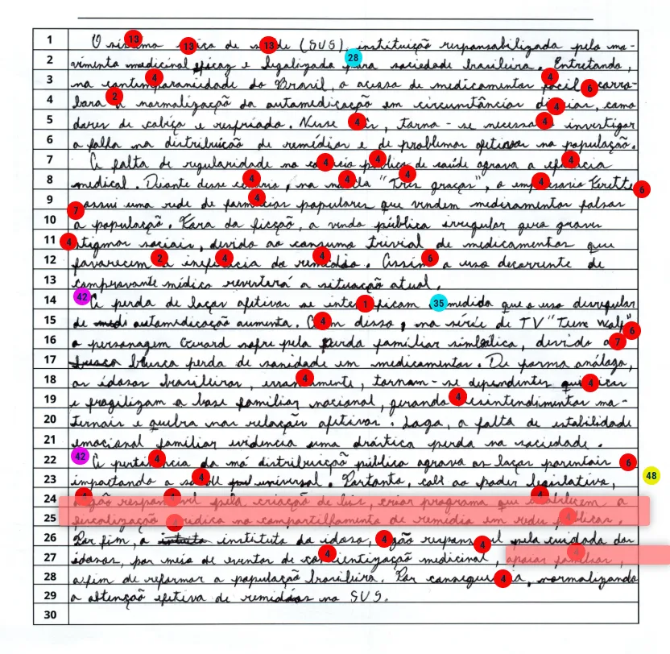
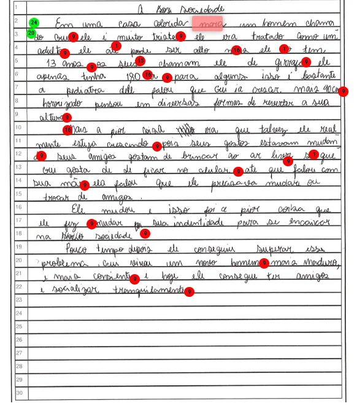

Cases
O raciocínio por trás de cada texto.
Materiais didáticos que escrevi em sala de aula, a minha rotina de correção e o teste prático de copy que fiz para as marcas do grupo YDUQS. Em cada um, o desafio, as decisões e um trecho real da entrega.
O avesso da pele no 9º ano: memória, tempo psicológico e racismo em uma apostila de leitura
Desafio
O romance de Jeferson Tenório pula entre épocas o tempo todo e trata de racismo de forma direta. A apostila precisava fazer estudantes de 14 anos acompanharem essa narrativa fragmentada e chegarem ao tema sem que a leitura virasse resumo de enredo.
Estratégia
- Abertura em tom de conversa, que convida a ler “como quem escuta alguém contar algo importante”
- Questões em progressão: entender quem narra, comparar duas cenas, explicar o estereótipo e, por fim, se colocar no lugar do personagem
- Box teórico sobre tempo psicológico com exemplos do dia a dia dos alunos (a aula que não acaba, a música que puxa uma lembrança), com base em Benedito Nunes
- Gabarito com respostas completas, para o professor aplicar e corrigir com segurança
O que a cena do consultório e a cena da lembrança têm em comum? Pense em quem está diante de Henrique, no que essas pessoas querem saber e em como ele reage.
Gabarito: Nas duas, ele está sentado diante de adultos com autoridade (os terapeutas; o diretor e a supervisora) que querem entender o que há de errado com ele. Nas duas, ele sente que essas pessoas não entendem a realidade que ele vive e, por isso, se fecha e fica calado.
O que este case demonstra
Para educação: leitura literária com temas sensíveis, elaboração de itens em progressão e gabarito comentado.
Para marketing: traduzir um conteúdo difícil para um público específico, com exemplos que ele reconhece na própria rotina.
Gramática que nasce do texto: regência verbal em Clarice Lispector e em Luanda, Lisboa, Paraíso
Desafio
Regência verbal costuma ser ensinada como lista de regras soltas. A proposta era mostrar que a escolha de uma preposição muda o sentido, e que isso aparece na própria literatura que os alunos estão lendo.
Estratégia
- Cada questão de gramática parte de um trecho da obra e termina em uma pergunta sobre sentido
- Interpretação e gramática no mesmo material: a carência da família, a presença de Glória à distância e a oralidade do português de Angola
- Quadro de regência com exemplos reescritos a partir da crônica, para o aluno consultar
- Gabarito que justifica cada resposta, não só a confirma
Explique a diferença de sentido entre “precisar de” (transitivo indireto) e “precisar” (transitivo direto).
Gabarito: Precisar de algo indica necessidade. Como transitivo direto, precisar assume o sentido de determinar com exatidão, de tornar preciso.
Clarice aspirava ____ produção de uma reflexão sincera sobre si mesma.
Gabarito: à. No sentido de desejar, aspirar é transitivo indireto e pede a preposição “a”. Diante de palavra feminina, preposição e artigo se juntam: a + a = à.
O que este case demonstra
Para educação: gramática contextualizada, domínio de norma-padrão e literatura de língua portuguesa contemporânea.
Para marketing: precisão de revisora. Sei por que cada palavra está ali e o que muda quando ela sai.
Correção de redações do 6º ano ao Enem e à UERJ, com feedback que o aluno consegue usar
Corrijo pelos critérios de cada exame ou da escola, em plataformas de correção. O feedback abre com o que o texto já faz bem e, em seguida, aponta os problemas com o trecho, a troca sugerida e um caminho prático para a próxima redação.
Exemplo 1 · Ensino Médio, modelo Enem

[Nome do aluno], você abriu o texto com o SUS e a facilidade de acesso a medicamentos, o que mostra que você enxergou o ponto de partida do problema. Também usou a novela “Três Graças” e a série “Teen Wolf” como repertório e organizou o texto em quatro parágrafos, com conectivos variados, como “Entretanto”, “Nesse viés”, “Além disso” e “De forma análoga”.
Por outro lado, o texto se afasta do tema. O foco são os impactos da automedicação na saúde pública, mas o terceiro parágrafo trata da perda de laços afetivos e das famílias, e a ligação com o SUS fica sem explicação. A frase “gerando desentendimentos maternais” não tem sustentação, pois o texto não mostra por que a automedicação de idosos causaria conflitos entre mães e filhos. O repertório de “Teen Wolf” parece forçado, porque a perda de sanidade do personagem não se relaciona de forma clara com a automedicação. Use o Texto I, que cita o risco de dependência física e psicológica com ansiolíticos e opioides, para sustentar o argumento sobre os idosos, e mostre o efeito no sistema público, como internações por intoxicação e a sobrecarga dos hospitais. Em “O uso decorrente de comprovante médico reverterá a situação atual”, falta explicar como o comprovante resolve o problema. Algumas frases também ficaram sem sentido completo.
Alguns conectivos precisam de troca. Troque “Assim,” por “Dessa forma,”, “Logo,” no terceiro parágrafo por “Dessa forma,” e “Por consequência,” por “Com isso,”, pois nenhum deles introduz uma conclusão lógica. As palavras “perda”, “afetivos”, “remédios” e “público” se repetem e podem ser trocadas.
Exemplo 2 · 6º ano do Ensino Fundamental

[Nome da aluna], sua redação foi muito bem construída: você pegou o personagem Gui e criou um conflito duplo muito interessante: o crescimento físico que ele não queria e a pressão para mudar de amigos e “se encaixar”. O desfecho, mostrando que ele amadureceu e aprendeu a ter amigos sem precisar fingir ser quem não é, é uma reflexão bem madura sobre o tema. Parabéns pela originalidade!
Por outro lado, o texto muda de tempo verbal várias vezes sem motivo, misturando presente e passado na mesma história. Por exemplo: “mora um homem” deveria ser “morava um homem”; “ele é muito triste” deveria ser “ele era muito triste”; “ele só tem 13 anos” deveria ser “ele só tinha 13 anos”; “os amigos chamam ele de girafa” deveria ser “os amigos chamavam ele de girafa”; e “seus amigos gostam de brincar... Gui gosta de ficar no celular” deveria ser “seus amigos gostavam... Gui gostava”. Como você contou a história como algo que já aconteceu, o ideal é manter tudo no passado do início ao fim, sem pular para o presente no meio do texto.
O que este case demonstra
Para educação: domínio da matriz do Enem e feedback que o aluno consegue aplicar na redação seguinte.
Para marketing: olho de revisora para tema, argumento sem sustentação, repetição e conectivo mal usado.
Os quatro cases a seguir são do teste prático do processo seletivo da Saber em Rede para as marcas do grupo YDUQS. Os campos entre colchetes eram dados a confirmar com o time.
Régua de Black Friday em 4 disparos para mobilizar uma rede de afiliados
Desafio
O briefing pedia uma régua de captação de alunos. Mas quem recebe os e-mails é o afiliado, não o aluno. A régua precisava ativar, equipar e mobilizar essa rede durante o mês inteiro, respeitando o posicionamento de cada marca.
A régua
- Semana 1Esquenta
Reativar a base e pedir a confirmação de participação. CTA: Quero participar. - Semana 2Oferta
Revelar o desconto ancorado na autoridade da marca. CTA: Baixar meu kit. - Semana 3Objeções
Cases de afiliados e respostas para preço e formato. CTA: Ver respostas prontas. - Semana 4Última chamada
Prazo das 23h59, ações para as próximas horas e teste A/B no assunto.
Decisões que importam
- Tom por marca: preço e flexibilidade em Estácio e Wyden; “condições especiais de ingresso” em Ibmec e IDOMED, para preservar o posicionamento premium
- Duas jornadas acompanhadas ao mesmo tempo: a do afiliado e a dos contatos dele
- Uma métrica de sucesso por disparo e segmentação a partir do comportamento na semana anterior
- Envio às 7h e reenvio às 15h para quem não abriu, com o assunto vencedor do A/B
Assunto A: [Nome], a Black Friday acaba hoje às 23h59
Assunto B: [Nome], última chance de vender com desconto: até 23h59
Hoje, às 23h59, o desconto sai do ar. Até lá, cada mensagem sua pode virar uma matrícula.
O teste A/B isola uma única variável: a versão A fala da urgência da oferta, a B fala do ganho do afiliado.
Pegar meu material e postar agoraO que este case demonstra
Para marketing: pensamento de funil, segmentação, teste A/B e leitura atenta do briefing.
Para educação: conhecimento de captação de alunos e do posicionamento de diferentes instituições de ensino.
Reta final de inscrições: um e-mail que entrega ao afiliado a resposta para cada objeção
Desafio
Quebrar objeções e criar urgência em até 200 palavras. Como o leitor é o afiliado, o e-mail não podia só listar benefícios do curso: ele precisava dar ao afiliado o que dizer para quem ainda está em dúvida.
Estratégia
- Três assuntos com ângulos diferentes: curiosidade, prazo e ganho de quem lê
- As cinco objeções mais comuns, cada uma com uma resposta curta pronta para usar
- Fechamento com aversão à perda e uma ação concreta: chamar hoje 3 contatos
- Valores conferidos no regulamento do programa, com nota para o time confirmar antes do envio
Assunto: [Nome], sua próxima comissão está nos seus contatos
“Diploma EAD vale menos?” Responda sem rodeio: não. O curso é reconhecido pelo MEC, e o diploma tem a mesma validade do presencial.
“Vou deixar para depois.” Lembre: as inscrições fecham em [data], e a próxima turma só começa em [mês].
Cada inscrição adiada é uma comissão perdida.
Pegar meu link do IndicaêO que este case demonstra
Para marketing: quebra de objeção, escrita enxuta e cuidado com informação regulada.
Para educação: domínio das dúvidas reais de quem pensa em voltar a estudar.
60 segundos para ensinar afiliados a vender uma bolsa de estudos
Desafio
Explicar uma bolsa nova e ensinar a divulgá-la em um minuto, com tom direto e dinâmico. O vídeo tinha que prender nos primeiros segundos e terminar com o afiliado querendo postar no mesmo dia.
Estratégia
- Gancho que contraria o óbvio: o contato não liga para porcentagem
- Três passos práticos, cada um com o texto em tela que o resume
- Mensagem de WhatsApp pronta, que termina em pergunta para o contato responder
- Orientações de gravação: 9:16, legenda o tempo todo, uma tomada só e closes feitos na edição
O que este case demonstra
Para marketing: escrita para vídeo curto, gancho, ritmo e direção de cena.
Para educação: ensinar algo útil em pouco tempo, passo a passo.
Cinco demandas, uma semana de Black Friday e um briefing urgente
No mesmo teste, organizei a semana a partir de dois critérios: o que perde valor mais rápido se atrasar e o quanto cada demanda pesa na receita.
- 01Roteiros da oferta de 48h.
Se atrasarem, a venda não acontece. - 02E-mail de Black Friday de terça.
Data fixa, em uma régua que não pode quebrar. - 03Ajuste das landing pages.
Ajustes rápidos no mesmo dia e revisão estrutural com dados. - 04E-mail de quinta.
Mesma importância, mais folga. - 05Artigo de SEO.
Trabalha no médio prazo, por isso é o item que eu negociaria.
“Para não comprometer os e-mails da Black Friday nem o ajuste das LPs, proponho mover o artigo de SEO de sexta para terça. Na sexta, te envio a estrutura com palavra-chave e tópicos.”
Quer um texto assim para a sua marca?
Envie o que você precisa e o prazo. A resposta chega por e-mail.
Solicitar orçamento